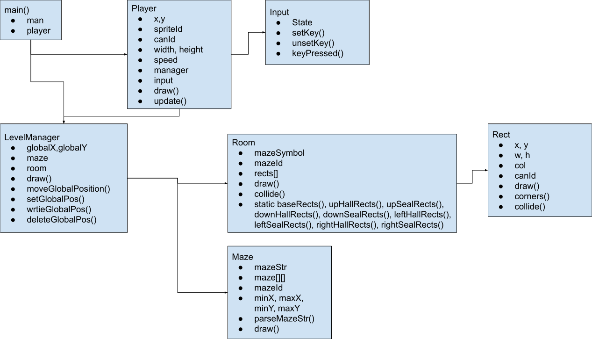

At first, Hudson convinced the group to try to make a Spotify clone with more features. It worked, but he had a "better" idea the next day. He wanted to make a maze that goes room by room and has a max possible doorway count of 4. The pod was on board quickly.
The user navigates through the maze where each room is a separate HTML page generated and loaded by JavaScript. The game listens for entering an area defined as an ‘exit,’ upon entering this area, a button will appear that can take them to a new room. Therein lies the maze. The goal is to find 5 objective items to unlock the exit and escape. Along the way, the player will encounter deadly enemies that can only be escaped from, not killed. The user uses the arrow keys or WASD to move the character through the maze. The maze is room-by-room with anywhere from 1 to 4 entry points and entry points being able to load the player character into another room.

The program can be split into two mostly distinct parts: the player and the level manager. The level manager is responsible for saving, loading, and setting the global position, as well as keeping track of what room the current position corresponds to. The global position is tracked using cookies, while the maze is generated from a maze string written in symbols we made for this project. The specific room is generated using this symbol and is stored by the level manager. A room is in turn defined as many rectangles, which can be drawn and collided with. The player is responsible for its position within a room, as well as figuring out when to request a room transition. It manages input using a custom input class, which stores the keys pressed as a 4-bit number. The player also stores a reference to the level manager so it can request a transition.
Hudson selected the initial test sprite and designed the final player sprite. He was also responsible for writing code that drew the rooms onto the screen using lines. Later he converted that code to use rectangles, as shown in the final game.